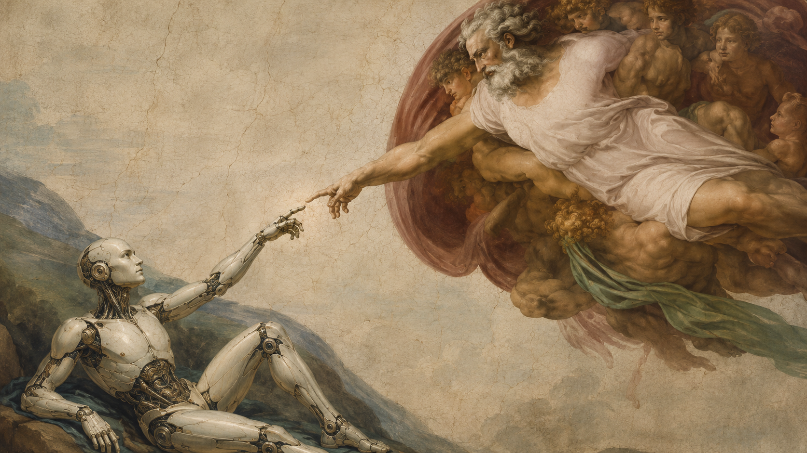

Услуги
Услуги можно брать отдельно или объединять в один проект. Это может быть сайт, интернет-магазин, Android-приложение, прототип, ИИ-помощник, продающий текст или визуальная система проекта.
Я работаю с задачей целиком: разбираю смысл, аудиторию, структуру, подачу и действие, к которому нужно привести человека. Так проект получается понятным, аккуратным и пригодным для реальной работы.

Направления работы
Выберите направление, чтобы посмотреть отдельный лендинг с составом работы, пользой, процессом и результатом.